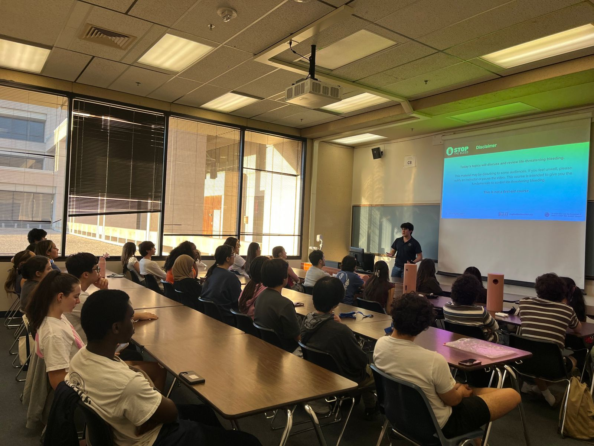
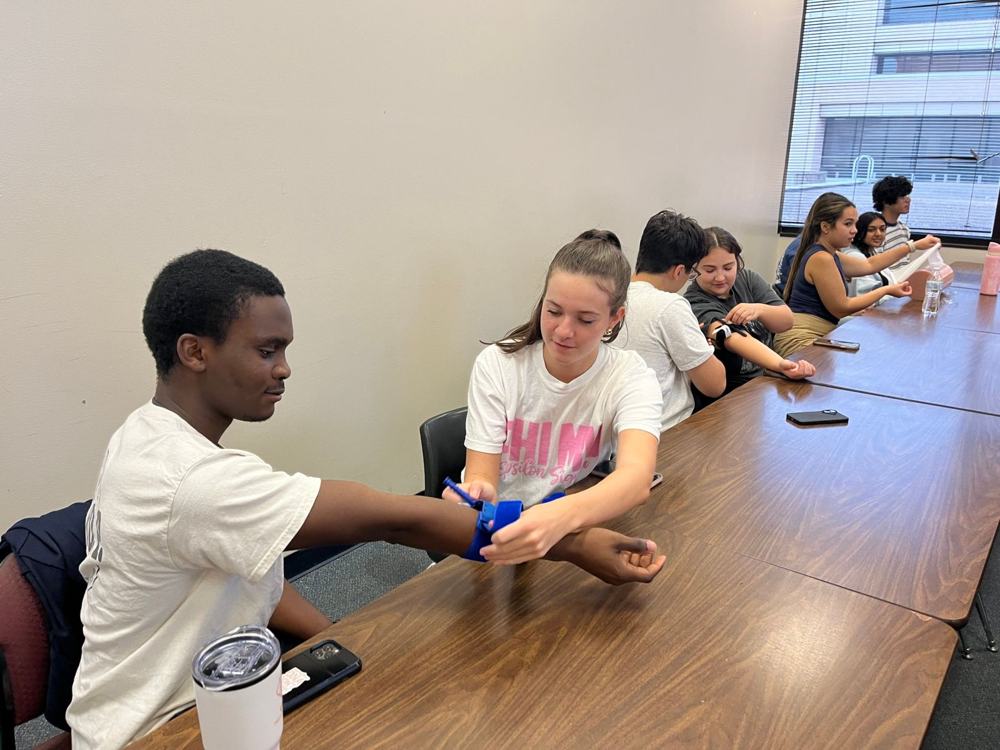
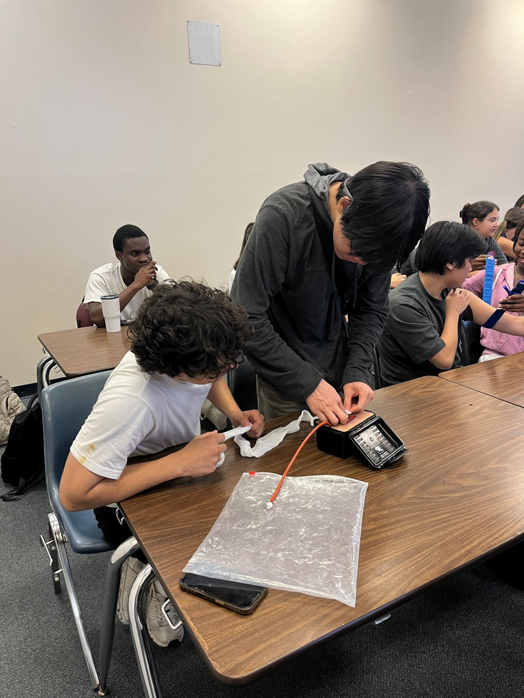

La capacitación
Una clase práctica y gratuita. Sales sabiendo cómo detener un sangrado que pone en peligro la vida, con un certificado que lo respalda.
Cómo es una clase
- Una encuesta anónima corta, para saber de dónde parte el grupo.
- Una presentación corta sobre cómo reconocer un sangrado que pone en peligro la vida y el ABC de STOP THE BLEED®: Alerta, Busca el sangrado, Comprime.
- Práctica. Todos aplican presión directa, rellenan un simulador de herida y ponen un torniquete real, con un instructor revisando.
- Una segunda encuesta corta, y luego tu certificado llega por correo.
Normalmente dura alrededor de una hora.
Para quién es
Para cualquier persona. No necesitas experiencia médica, y la mayoría de nuestros participantes no la tiene. Hemos dado clases a organizaciones estudiantiles, grupos de clase y miembros de la comunidad, y vamos a escuelas, iglesias, lugares de trabajo y centros comunitarios en todo San Antonio.
Qué llevamos y qué pones tú
Nosotros llevamos a los instructores, los torniquetes, las gasas y los simuladores de heridas. Tú pones un salón con mesas y la gente. Un proyector ayuda, pero podemos enseñar sin él.
Certificado
Quienes completan la clase reciben por correo un certificado de finalización de la Stop the Bleed Coalition. Hasta ahora nadie ha reprobado una de nuestras clases.
¿Listo para agendar? Escríbenos con quiénes son, cuántas personas más o menos, algunas fechas que les funcionen, dónde, y si la quieren en español o inglés.
projectbloodlinesatx@gmail.com


